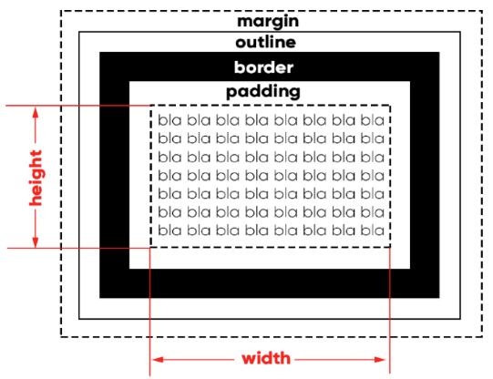

♦ Parágrafos e quebras de linha
Você pode escrever um parágrafo de qualquer jeito, basta colocar tudo no meio do par de tags <p> e </p>.
Se precisar quebrar o texto em algum lugar específico
como esse, você pode usar a tag <br>. E <wbr> para quebra de palavra.
As principais formatações:
Negrito / Destaque
Nesta frase temos um termo em negrito usando a tag <b> (não semântica).
Nesta frase temos um termo em destaque usando a tag <strong> (semântica).
Itálico / Ênfase
Nesta frase, temos um termo em itálico usando a tag <i> (não semântica).
Nesta frase, temos um termo em ênfase usando a tag <em> (semântica).
Texto Marcado
Podemos criar também um texto marcado usando a tag <mark>
E no outro parágrafo, temos outro texto marcado no final.
Texto grande e pequeno
Estamos criando um texto grande com a tag <big> porém vai ser descontinuada
E um texto pequeno com a tag <small> nesse parágrafo.
Texto deletado
Podemos marcar um texto como excluído para indicar que ele deve ser lido, mas não considerado (usar a tag <del>).
Texto inserido
Podemos marcar um texto inserido para dar uma ênfase e indicar que ele foi adicionado depois (usar a tag <ins>)
Existe também o sublinhado com a tag <u> (não semântica).
Texto sobrescrito
Para inserir "textos elevados", coisas do tipo x20+3 (usar a tag <sup>).
Texto subscrito
Para inserir "textos abaixo", coisas do tipo H20 (usar a tag <sub>).
Código-fonte / Pré-formatação
O comando <code> é para deixar as letras mais fáceis de se visualizar (deixa tudo do mesmo comprimento), exemplo:
document.getElementById('teste') → sem o code document.getElementById('teste') → com o code
O comando <pre> (pré-formatação de texto) faz com que a identação fique igual a do programa, exemplo:
num = int(input('Digite um número: '))
if num % 2 == 0:
print(f'O número {num} é PAR')
else:
print(f'O número {num} é ÍMPAR')
print('Fim do Programa')
Citações simples
Colocar a tag <q> quando for fazer uma citação (citar uma frase de um livro / citar uma frase de alguem / etc), exemplo:
Como diria o pai de um amigo: o computador é um burro muito rápido.
Citações completas
Colocar a tag <blockquote> para também fazer uma citação, porém essa fica um pouco mais clara e conseguimos colocar da onde é a citação, exemplo:
Segundo Machado de Assis, no livro Dom Casmurro:
A imaginação foi a companheira de toda a minha existência, viva, rápida, inquieta, alguma vez tímida e amiga de empacar, as mais delas, capaz de engolir campanhas e campanhas, correndo.
Abreviações
A tag <abbr> serve para escrever o significado de uma palavra que está abreviada, exemplo:
Estou estudando HTML e CSS, estou adorando!
Texto invertido
A tag <bdo> para inverter a frase, <bdo dir="rtl"> inverte a frase e a <bdo dir="ltr"> deixa a frase normal, exemplo:
Estou aprendendo a criar coisas em HTML. → com <bdo dir="ltr">
Estou aprendendo a criar coisas em HTML. → com <bdo dir="rtl">
♦ Símbolos e Emoji
Vamos adicionar alguns símbolos especiais:
®
©
™
€
£
¥
¢
Δ
δ
Λ
∑
∞
×
±
⊕
√
≠
ω
φ
←
→
↑
↓
↔
♠
♣
♥
♦
<
>
≤
≥
Agora vamos adicionar emojis.
Procurar no site: https://emojipedia.org/ o código do emoji e colocar &#x no começo do código e finalizar com ;
exemplo: 💰
🤑
♦ Imagens
Para pesquisar imagens, pode ser pelo google imagens mesmo, porém terá que escolher na opção que pesquise imagens sem direito autoral 'Marcadas para reutilização com modificação' ou 'Marcadas para reutilização'
Outras formas de pesquisar é com os sites: https://unsplash.com/pt-br (pesquisar em inglês), https://www.pexels.com/pt-br/ (pesquisar em inglês) ou https://www.freepik.com/. Editar as fotos no GIMP
Para baixar as fotos, salvar imagem como... e salvar na área de trabalho com nome do arquivo em minúsculo para ficar mais fácil de analisar (JPEG imagem com fundo / PNG imagem com fundo transparente).
Para "formatar" a imagem para colocar no site: Abrir a imagem com o GIMP → Imagem → Redimencionar imagem → Mudar largura entre 100 (pequeno) e 1500 (grande) e clicar em TAB para recalcular a altura.
Abaixo você vai ver uma imagem que está na mesma pasta.
Podemos também carregar imagens que estão em sub-pastas.
Também podemos carregar imagens externas (direto do site, porém não tem como editar ela, fica um pouco pesado...).
No site https://favicon.io/ conseguimos criar um icon para deixar no site (imagem que fica ao lado do título da página)
Ou também podemos procurar por um icon já existente no site https://www.iconarchive.com/.
Imagem dinâmica
Também conseguimos colocar imagens com a tag <picture>, melhor pois conseguimos "trocar" a imagem para que caiba na tela no usuário, utilizamos a tag <picture> e dentro dessa tag abrimos outra tag <img>. E ainda acrescentamos mais outra tag dentro da tag <picture>, para que conseguimos mudar a imagem <source:media:type> (trocar min-width: para max-width (colocar o tamanho da imagem em px)).
Clique aqui para entender melhor sobre oque está escrito acima.
Imagem de fundo
Para colocar uma imagem de fundo, colocamos o parâmetro background-image: url(nome do arquivo); dentro da tag <style>. Clique aqui para ir na página com uma imagem de fundo.
Também conseguimos mudar o tamanho da imagem (utilizar o parâmetro backgroud-size:), se a imagem se repete ou não (utilizar o parâmetro background-repeat:), o posicionamento da imagem (utilizar o parâmetro background-position:), o vinculo da imagem (utilizar o parâmetro background-attachment: scroll; para imagem rolar junto com o fundo / background-attachment: fixed; para a imagem se fixar no fundo). Clique aqui para ir na página de exemplo, e se precisar, abrir os arquivos para entender melhor.
Sabemos que para fazer o alinhamento horizontal de uma imagem, utilizamos o parâmetro margin: auto;, agora para fazer um alinhamento vertical, adicionamos o parâmetro position, position: relative; na box de fundo e position: absolute; na box da frente. Com o position: absolute; conseguimos colocar outros parâmetros (top, left, bottom, right) para mexer a box da frente em relação a box do fundo (left: 50%; top: 50%;), logo após, colocar o parâmetro transform: translate() (aplica uma alteração de transformação [translate() = mexe no componente]), colocar (-50% -50%).
Um efeito Parallax é uma técnica de design que cria a ilusão de profundidade e movimento em um site, dando a impressão de um ambiente em 3D. Clique aqui para ir na página com um efeito Parallax (abrir os arquivos para enterder melhor). Para criar um efeito Parallax:
- background-image: url(); → adicionar a imagem
- background-position: → define a posição da imagem
- background-repeat: → define se a imagem repete ou não
- background-size: cover; → define que a imagem de fundo cubra todo o contêiner sem distorção (indireita a imagem).
- background-attachment: fixed; → para imagem ficar fixa no fundo
♦ Listas
Para escrever qualquer tipo de lista, utiliza-se a tag <li> para indicar um item na lista.
Lista Ordenadas
Utiliza-se a tag <ol> para abrir a lista ordenada, também podemos mudar o ícone que fica na lista utilizando o "type" dentro da tag <ol>. Também conseguimos mudar em qual número/letra começa a lista utilizando o "start" dentro da tag <ol>
Tipos de type → (1 = lista numerada / A = lista alfabética maiúscula / a = lista alfabética minúscula / I = lista em número romano maiúscula / i = lista em número romano minúscula).
- Acordar
- Ir para faculdade
- Ir para o trabalho
- Voltar para casa
- Dormir
- Acordar
- Ir para faculdade
- Ir para o trabalho
- Voltar para casa
- Dormir
- Acordar
- Ir para faculdade
- Ir para o trabalho
- Voltar para casa
- Dormir
Lista não Ordenadas
Utiliza-se a tag <ul> para abrir uma lista não ordenada, também podemos mudar o ícone que fica na lista utilizando o "type" dentro da tag <ul>.
Tipos de type → (disc = bolinha preta / circle = bolinha branca / square = quadradinho).
- Pão
- Hambúrguer
- Queijo
- Alface
- Bacon
- Pão
- Hambúrguer
- Queijo
- Alface
- Bacon
- Pão
- Hambúrguer
- Queijo
- Alface
- Bacon
Listas compostas
Para fazer uma lista composta basta se atentar a identação, por exemplo:
Meus jogos favoritos de cada plataforma:
- Nintendo
- Pokemon Fire Red
- Super Mario Kart
- Kurby Super Stars
- XBOX
- Gears Of War 2
- Red Dead Redemption
- Prototype
- PlayStation
- Call of Duty
- Grand Theft Auto
- Apex Legends
Lista de Definições
Utilizar a tag <dl> para abrir a lista <dt> para o item da lista e <dd> para a descrição do item, por exemplo:
- HTML
- Linguagem de marcação para a criação do conteúdo de um site.
- CSS
- Linguagem de marcação para a criação do desing de um site.
- JavaScript
- Linguagem de programação para a criação de interatividade de um site.
♦ Tabelas
Para criar tabelas em HTML, utilizamos a tag <table> (tabela) para abrir a tabela, <caption> para o título / legenda da tabela junto com as tags <tr> (table row = linha da tabela) e <td> (table data = dado da tabela). Quando criamos uma tabela e acrescentamos a tag de estilo 'border: 0px solid black' criamos linhas em volta de cada dado, porém elas ficam com um pequeno espaço entre elas, para tirar esse espaço, utilizamos a tag 'border-collapse: collapse', e para ter um espaço utiliza-se 'border-collapse: separate'.
Para deixar claro para os mecânismos de busca, que um título de uma tabela é relacionado com a coluna, acrescentar o parâmetro scope="col", e o título relacionado com a linha, utilizar o parâmetro scope="row". Isso não causa nenhum efeito visual, serve só para especificar o relacionamento entre o título e os dados.
Tabelas simples
Anatomia de tabela simples:
<table> → tabela
<caption> → título / legenda da tabela
<tr> → linha da tabela
<th> → cabeçalho da tabela
<td> → dado da tabela
<!DOCTYPE html>
<html lang="pt-br">
<head>
<meta charset="UTF-8">
<meta name="viewport" content="width=device-width, initial-scale=1.0">
<title>Tabelas</title>
<style>
table {
width: 500px; !- para o "quadradinho" fique maior -!
border-collapse: collapse; !- juntar os "quadradinhos" -!
}
td {
border: 1px solid black; !- linhas em volta de cada dado -!
padding: 10px; !- dar um espaço entre o dado e a borda -!
text-align: center; !- alinhamento horizontal -!
vertical-align: middle; !- alinhamento vertical -!
}
</style>
</head>
<body>
<table>
<caption>Tabela simples</caption>
<tr> !- 1° linha -!
<td>A1</td> !- 1° dado da 1° linha -!
<td>B1</td> !- 2° dado da 1° linha -!
<td>C1</td> !- 3° dado da 1° linha -!
</tr>
<tr> !- 2° linha -!
<td>A2</td> !- 1° dado da 2° linha -!
<td>B2</td> !- 2° dado da 2° linha -!
<td>C2</td> !- 3° dado da 2° linha -!
</tr>
<tr> !- 3° linha -!
<td>A3</td> !- 1° dado da 3° linha -!
<td>B3</td> !- 2° dado da 3° linha -!
<td>C3</td> !- 3° dado da 3° linha -!
</tr>
</body>
Que no caso ficaria assim:
| A1 | B1 | C1 |
| A2 | B2 | C2 |
| A3 | B3 | C3 |
Tabelas Grandes
Para fazer tabelas mais complexas, ainda utilizamos a tag <table>, porém com mais alguns outros parâmetros, <thead> para o cabeçalho da tabela, <tbody> para o corpo da tabela, <tfoot> para o rodapé da tabela. E dentro deles utilizamos os mesmo parâmetros da tabela simples: <tr> (linha da tabela) <td> (dado da tabela) <th> (cabeçalho da tabela).
Anatomia de tabela complexas:
<table> → tabela
<caption> → título / legenda da tabela
<thead> → CABEÇA da tabela
<tr> → linha da tabela
<th> → cabeçalho da tabela
<td> → dado da tabela
<tbody> → CORPO da tabela
<tr> → linha da tabela
<th> → cabeçalho da tabela
<td> → dado da tabela
<tfoot> → PÉ da tabela
<tr> → linha da tabela
<th> → cabeçalho da tabela
<td> → dado da tabela
Agora um exemplo de uma tabela dos 10 estados mais populosos do Brasil em 2025.
<!DOCTYPE html>
<html lang="pt-br">
<head>
<meta charset="UTF-8">
<meta name="viewport" content="width=device-width, initial-scale=1.0">
<title>Habitantes do Brasil em 2025</title>
<style>
table {
width: 500px; !- para o "quadradinho" fique maior -!
border-collapse: collapse; !- juntar os "quadradinhos" -!
}
td, th {
border: 1px solid black; !- linhas em volta de cada dado -!
padding: 10px; !- dar um espaço entre o dado e a borda -!
}
caption {
font-size: 1.2em; !- aumentar a letra do título / legenda da tabela -!
font-weight: bold; !- "peso" da letra -!
padding: 5px; !- espaço entre o dado e a borda -!
background-color: lightgray; !- cor de fundo do título / legenda -!
}
thead, tfoot {
background-color: gray; !- cor de fundo do cabeçalho e do rodapé -!
color: white; !- cor da letra -!
}
td.num {
text-align: right; !- alinhamento do td com class='num' -!
}
</style>
</head>
<body>
<table>
<caption>Os 10 primeiros estados mais populosos do Brasil em 2025.</caption>
<thead>
<tr>
<th scope="col">Estado</th>
<th scope="col">População</th>
</tr>
</thead>
<tbody>
<tr>
<th>São Paulo</th>
<td class="num">45.973.194</td>
</tr>
<tr>
<th>Minas Gerais</th>
<td class="num">21.322.691</td>
</tr>
<tr>
<th>Rio de Janeiro</th>
<td class="num">17.219.679</td>
</tr>
(colocar as outras cidades...)
</tbody>
<tfoot>
<tr>
<th scope="row">Total de habitantes</th>
<td class="num">157.916.089</td>
</tr>
</tfoot>
</body>
Que no caso fica assim:
| Estado | População |
|---|---|
| São Paulo | 45.973.194 |
| Minas Gerais | 21.322.691 |
| Rio de Janeiro | 17.219.679 |
| Bahia | 14.850.513 |
| Paraná | 11.824.665 |
| Rio Grande do Sul | 11.229.915 |
| Pernambuco | 9.539.029 |
| Ceará | 9.233.656 |
| Pará | 8.664.306 |
| Santa Catarina | 8.058.441 |
| Total de habitantes | 157.916.089 |
Efeito zebrado nas tabelas
Para fazer um efeito zebrado em uma tabela usamos uma tag no CSS, utilizamos uma pseudo-classe nas linhas da tabela (tr), nth-child(odd) ou nth-child(even). Também podemos trocar o odd (ímpar) por 2n-1, e even (par) por 2n. Que no caso as tags de estilo ficariam assim:
tbody > tr:nth-child(even) { tbody > tr:nth-child(odd) {
background-color: lightgray; OU background-color: lightgray;
} }
No exemplo de cima (tabela dos 10 estados mais populosos do Brasil), utilizei o parâmetro nth-child(even).
Cabeçalho fixo para grandes tabelas
Conseguimos fixar o cabeçalho de uma tabela para que fique melhor de se visualizar, normalmente utilizamos em tabelas muito grande, que assim que você começa a descer, o cabeçalho da tabela some, assim tendo que subir sempre para ver qual o título de cada coluna. Para fixar o cabeçalho utilizamos os parâmetros position: relative; no CSS da tabela, e criamos outro parâmetro no CSS (thead > tr > th) que significa o th que está dentro do tr que está dentro do thead vai receber esses outros parâmetros. Que seriam os parâmetros position: sticky; (colável) + top: 0; (colar na parte 0 "topo") + background-color: (mesmo background-color do cabeçalho). Que no caso as tags CSS ficariam assim:
table{ thead > tr > th {
position: relative; + position: sticky;
} top: 0;
background-color: msm do cabeçalho;
}
Também foi utilizado esses parâmetros na tabela de cima (tabela dos 10 estados mais populosos do Brasil)
Mesclagem de células
A mesclagem de células em HTML é feita com os atributos colspan e rowspan. Esses atributos são usados dentro das tags <td> ou <th>. O atributo colspan é usado para mesclar células em coluna. Já o atributo rowspan é usado para mesclar células em linhas.
<!DOCTYPE html>
<html lang="pt-br">
<head>
<meta charset="UTF-8">
<meta name="viewport" content="width=device-width, initial-scale=1.0">
<title>Mesclagem de Células</title>
<style>
table {
width: 500px;
border-collapse: collapse;
}
td {
border: 1px solid black;
padding: 10px;
}
</style>
</head>
<body>
<table>
<caption>Tabela com mesclagem de células</caption>
<tr>
<td>A</td>
<td colspan="2">B</td>
</tr>
<tr>
<td rowspan="3">D</td>
<td>E</td>
<td rowspan="2">F</td>
</tr>
<tr>
<td>H</td>
</tr>
<tr>
<td colspan="2">L</td>
</tr>
</body>
Que no caso ficaria assim:
| A | B | |
| D | E | F |
| H | ||
| K | ||
Você viu que na hora de mostrar um título de uma tabela que é relacionado com a coluna, acrescentar o parâmetro scope="col", e o título relacionado com a linha, utilizamos o parâmetro scope="row". Isso não causa nenhum efeito visual, serve só para especificar o relacionamento entre o título e os dados. E quando tiver uma mesclagem de células também indentificamos o título, porém se tiver uma mesclagem de linha, colocar o parâmetro scope="rowgroup" e quando tiver uma mesclagem em coluna, colocar o parâmetro scope="colgroup".
Exemplo:
| Grupo | Nomes | Filmes | ||
|---|---|---|---|---|
| Mulheres | Ana Maria Santos | Alien | Rambo | Vingadores |
| Beatriz Souza | Hulk | Inception | Batman | |
| Cláudia Melo | Oblivion | Matrix | Big Hero | |
| Homens | Bruno Mendonça | Intocáveis | Amnésia | Gladiador |
| Daniel Lourenço | Wall-E | Oldboy | Dangal | |
| Fabiano Mota | Star Wars 5 | Taxi Driver | Toy Story | |
- O título "Grupos" utiliza scope="col", pois o item relacionado está na mesma coluna (Mulheres/Homens).
- O título "Nomes utiliza scope="col", pois o item relacionado está na mesma coluna (nomes da pessoas).
- O título "Filmes" utiliza scope="colgroup", pois o item relacionado está mesclado, utilizando 3 colunas (nomes dos filmes).
- O título "Mulheres" utiliza scope="rowgroup", pois o item relacionado está mesclado, utilizando 3 linhas (nomes das mulheres + filmes de cada).
- O título "Homens" utiliza scope="rowgroup", pois o item relacionado está mesclado, utilizando 3 linhas (nomes dos homens + filmes de cada).
Dentro de uma tabela, nós sabemos que para estilizar uma linha, basta adicionar parâmetros na linha desejada. Agora para estilizar uma coluna inteira, teriamos que adionar o parâmetro de estilo um por um. Mas dentro de uma tabela, conseguimos adicionar a tag <colgroup> "Table Column Group Element" ou grupo de colunas de uma tabela HTML, que é o marcador onde se coloca propriedades ou formatações que serão "herdadas" pelas colunas que fazem parte daquele grupo de colunas, para cada coluna que tiver na tabela, adicionar o parâmetro <col>, e em seguida adicionar a pseudo-classe (class="") para a coluna que deseja estilizar (pode ser mais que uma). Por exemplo, uma tabela com 4 colunas, quero estilizar a segunda coluna:
<table>
<colgroup>
<col>
<col class="destaque">
<col>
<col>
</colgroup>
<caption>Exemplo</caption>
<tbody>
</tbody>
</table>
Para fazer uma responsividade de uma tabela de um site, envelopamos com uma tag <div> todo o conteúdo que estiver dentro da tag <table>. Depois acrescentamos uma tag de estilo (overflow: / overflow-y: / overflow-x:) dentro da tag <div> para que a tabela "quebre" e não tenha uma barra de rolagem lateral.
♦ Trabalhando com Links
Links externos
Para utilizar links externos usar a tag <a>, assim abrindo um parâmetro dentro da tag para colocar o link desejado.
Você pode acessar esse link para ouvir um clássico, porém com a tag assim o link abre na mesma página do site ("fechando" o site).
Para abrir links externos sem fechar o site utilizamos outros parâmetros dentro da tag, incluir ( target="_blank" para abrir em uma nova janela em branco / target="_self" para abrir sobre a página / rel="external" para identificar que é um link externo).
Colocando esses parâmetros na tag o link fica assim.
Links internos
Para links internos também utiliza a tag <a>, e colocamos o link da página que deseja. Utilizar os parâmetros rel para identificar para que o link sugerido serve (rel="next" → próxima página / rel="prev" → página anterior / rel="nofollow" → "fala" para o mecânismo de busca que você não da o aval do conteúdo do link).
Clique no link para saber como voltar de pasta.
Na terceira página mostra como volta.
♦ Áudio
Reproduzindo áudio
Para reproduzir áudios MP3 no HTML5 utiliza-se a tag <audio>, e também é preciso colocar os parâmetros autoplay para tocar a música assim que carregar a página (não é obrigatório), controls para aparecer um "controle" para dar play/pause e aumentar ou diminuir o volume do áudio, loop para o áudio se repetir (usa-se normalmete quando o áudio é curto).
Também existe outros tipos de formatos de áudio (WAV, OGG) ver se tem compatibilidade com o navegador. Outra maneira de reproduzir áudios também é com a tag <audio>, porém não é necessário o parâmetro que já vem incluso (pode apagar o src="") e acrescentar o parâmetro preload="" (preload="auto" só considera que a página carregou depois de carregar todo o áudio (não recomendado) / preload="metadata" só carrega o nome, data, duração do arquivo / preload="none" só carrega quando o usuário apertar play no controle). Depois colocar a tag <source:src>, assim abrindo outro parâmetro type="", para áudios em MP3 colocar o type="audio/mpeg" / para áudios em WAV colocar o type="audio/wav" / para áudios em OGG colocar o type="OGG".
♦ Vídeos
Sempre se atentar com a compatibilidade com os navegadores. Os formatos mais utilizados em vídeos são o MP4 e M4V, existem outros como WebM (que é um arquivo bem pequeno, porém não tem muita qualidade de vídeo) e OGV (um formato que está intimamente ligado ao OGG, pode ser utilizado para armazenamento ou transmissão na web).
Para pesquisar vídeos, podemos também utilizar o site https://www.pexels.com/pt-br/ que é o mesmo para pesquisar imagens (sempre lembrar dos direitos autorais). Para converter/formatar um vídeo utilizamos o aplicativo HandBrake (só converte para MP4, M4V e WebM / para converter para OGV basta pesquisar no google "conversor ogv"), serve para converter o vídeo em algum outro tipo de arquivo para que o vídeo fique mais leve, ou para o vídeo ficar com uma resolução melhor. Não é indicado hospedar um arquivo muito no grande no site, pois o custo fica muito caro. Se for colocar algum arquivo muito pesado, é indicado colocar ele como um link externo.
Vídeos hospedados localmente (dentro do servidor)
Vídeos hospedados localmente, consomem muitos dados do servidor, assim ficando mais caro para hospedar.
Para reproduzir vídeo no site, utiliza-se a tag <video> (se o vídeo não couber na tela, você pode editar/formatar ou adicionar um parâmetro width="" e colocar em quantos px o vídeo vai ficar), colocar parâmetro controls para mostrar um controle para dar play/pause ou aumentar/diminuir o volume.
Vídeos hospedados externamente
Os vídeos hospedados externamente tem como "benefício" não utilizar os dados do servidor para carregar o vídeo, assim ficando mais barato para hospedar.
- Vídeos do Youtube → Para conseguir inserir um vídeo do Youtube no site, basta clicar em compartilhar no vídeo desejado e clicar em Incorporar (monta um código HTML), depois só copiar e colar o código (conseguimos mudar o tamanho para ser exibido, basta alterar o código).
- Vídeos do Vimeo → Para conseguir inserir um vídeo do Vimeo no site, basícamente é igual a do Youtube, porém o Vímeo é um aplicativo pago. (Não coloquei nenhum vídeo pois não tenho conta)
♦ Estilos CSS
O CSS é quem da o desing para página, permite a formatação de páginas web. O CSS é utilizado para alterar cor do texto e do fundo; alterar a fonte; alterar o espaçamento entre parágrafos; criar tabelas; usar variações de layouts; ajustar imagens para suas respectivas telas; cria efeitos, profundidade, animações; cria página interativas e até jogos. O CSS é aplicado diretamente nas tags HTML ou fica contido dentro das tags <style>. Também é possível adicionar estilos adicionando um link para um arquivo CSS que contém estilos:
<style="color: ;"> → Muda a cor da letra
<style="font-size: ;"> → Muda o tamanho da letra
<style="font-style: ;"> → Muda o estilo da letra
<style="font-family: ;"> → Muda o tipo da letra
<style="font-weight: ;"> → Muda o "peso" da letra
<style="background-color: ;"> → Muda a cor de fundo
<style="background-image: linear-gradient();"> → Faz um degradê em linha no fundo
<style="background-image: radial-gradient();"> → Faz um degradê em circulo no fundo
<style="background-image: url();"> → colocar imagem de fundo
<style="text-shadow: (n°px n°px n°px cor sombra);"> → Coloca uma sombra
<style="text-align: ;"> → alinhamento do texto
<style="text-decoration: ;"> → Coloca uma linha decorativa
Agora clique aqui para ir na página que tem algumas tags em HTML e CSS.
Inline
O estilo inline não é muito recomendado pois tem que abrir a tag <style> para cada parâmetro, por exemplo:
<!DOCTYPE html>
<html lang="pt-br">
<head>
<meta charset="UTF-8">
<meta name="viewport" content="width=device-width, initial-scale=1.0">
<title>Estilo CSS Inline</title>
</head>
<body>
<h1 style="color: white; background-color: gray;">Estilo Inline</h1>
<p style="color: black; background-color: white;">
O estilo Inline não é muito recomendado pois tem que abrir a tag <style> para cada tag.
</p>
</body>
Internos / Locais
O estilo interno / local abre a tag <style> dentro da área de cabeça (<head>) e assim abrindo chaves para cada parâmetro que deseja mudar (muda todos os mesmos parâmetros junto,ex: se colocar no <h1> irá mudar todos os <h1> / se colocar no <p> irá mudar todos os <p>), por exemplo:
<!DOCTYPE html>
<html lang="pt-br">
<head>
<meta charset="UTF-8">
<meta name="viewport" content="width=device-width, initial-scale=1.0">
<title>Estilo CSS Internos / Locais</title>
<style>
body {background-color: gray;
font-family: monospace;
font-size: 20px;}
h1 {color: black;
font-family: arial;}
p {font-family: monospace;
text-align: justify;}
</style>
</head>
<body>
<h1>Estilo Internos / Locais</h1>
<p>
O estilo interno / local abre a tag <style> dentro da área de cabeça (<head>).
</p>
</body>
Externos
O estilo externo é mais versátil, pois utiliza-se um arquivo separado só para colocar os estilos, utilizar a tag <link:css> dentro da área de cabeça (<head>), ele também muda todos os parâmetros junto, igual ao estilo interno (se mudar o <h1> irá mudar todos os <h1> / se colocar no <p> irá mudar todos os <p>, etc...). Depois é só colocar as configurações dentro do arquivo (.css) que foi criado, por exemplo:
<!DOCTYPE html>
<html lang="pt-br">
<head>
<meta charset="UTF-8">
<meta name="viewport" content="width=device-width, initial-scale=1.0">
<title>Estilo CSS Externos</title>
<link rel="stylesheet" href="nome do arquivo">
</head>
<body>
<h1>Estilo Externos</h1>
<p>
O estilo externo é mais versátil, pois utiliza-se um arquivo separado só para colocar os estilos,
utilizar a tag <link:css> dentro da área de cabeça (<head>).
</p>
</body>
♦ Cores
Para colocar cores no site, utilizamos o tag <style> (pode ser dentro da cabeça (<head>) ou dentro do parâmetro escolhido). Conseguimos colocar as cores de algumas formas, pelo nome (em inglês), por código hexadecimais, RGB ou HSL (Hue Saturation Lightness). Também conseguimos mudar a transparencia da cor, podemos utilizar o RGBA ou HSLA. Segue alguns exemplos da mesma cor, porém de jeito diferente de se aplicar:
Por nomes (em inglês)
Para colocar cores pelo nome, abrimos a tag <style>, escolhemos oque queremos mudar (se é o fundo, cor da letra, cor da sombra, etc...) e digitamos a nome da cor em inglês.
Ex:
<!DOCTYPE html>
<html lang="pt-br">
<head>
<meta charset="UTF-8">
<meta name="viewport" content="width=device-width, initial-scale=1.0">
<title>Cores por nome</title>
</head>
<body>
<h1 style="color: white; background-color: blue;">Por nome</h1>
<p style="color: white; background-color: blue;">
Para colocar cores pelo nome, abrimos a tag <style>, escolhemos oque queremos mudar e digitamos o nome da cor em inglês.
</p>
</body>
Que no caso ficaria assim:
Por nome
Para colocar cores pelo nome, abrimos a tag <style>, escolhemos oque queremos mudar (se é o fundo, cor da letra, cor da sombra, etc...), e digitamos o nome da cor em inglês.
Por código hexadecimal
Para colocar cores pelo código hexadecimal, abrimos a tag <style>, escolhemos oque queremos mudar (se é o fundo, cor da letra, cor da sombra, etc...), e digitamos o código. Para ficar mais fácil, utilizamos o aplicativo GIMP (o mesmo para edição de fotos) para saber qual o código de cada cor.
Ex:
<!DOCTYPE html>
<html lang="pt-br">
<head>
<meta charset="UTF-8">
<meta name="viewport" content="width=device-width, initial-scale=1.0">
<title>Cores por código hexadecimal</title>
</head>
<body>
<h1 style="color: #ffffff; background-color: #0000ff;">Por código hexadecimal</h1>
<p style="color: #ffffff; background-color: #0000ff;">
Para colocar cores pelo código hexadecimal, abrimos a tag <style>, escolhemos oque queremos mudar
(se é o fundo, cor da letra, cor da sombra, etc...), e digitamos o código. Para ficar mais fácil, utilizamos o
aplicativo GIMP (o mesmo para edição de fotos) para saber qual o código de cada cor.
</p>
</body>
Que no caso ficaria assim:
Por código hexadecimal
Para colocar cores pelo código hexadecimal, abrimos a tag <style>, escolhemos oque queremos mudar (se é o fundo, cor da letra, cor da sombra, etc...), e digitamos o código. Para ficar mais fácil, utilizamos o aplicativo GIMP (o mesmo para edição de fotos) para saber qual o código de cada cor.
RGB / RGBA
Para colocar cores pelo RGB, abrimos a tag <style>, escolhemos oque queremos mudar (se é o fundo, cor da letra, cor da sombra, etc...), e digitamos rgb(n°, n°, n°) o primeiro número é a cor vermelha (0 a 255) / o segundo número é a cor verde (0 a 255) / o terceiro número é a cor azul (0 a 255). Para utilizar o RGBA, acrescentamos mais um número, que seria o da transparência vai de 0 à 1 (0 totalmente transparênte, 1 totalmente visível).
Ex:
<!DOCTYPE html>
<html lang="pt-br">
<head>
<meta charset="UTF-8">
<meta name="viewport" content="width=device-width, initial-scale=1.0">
<title>Cores por RGB/RGBA</title>
</head>
<body>
<h1 style="color: rgb(255, 255, 255); background-color: rgb(0, 0, 255);">Por RGB / RGBA</h1>
<p style="color: rgb(255, 255, 255); background-color: rgb(0, 0, 255);">
Para colocar cores pelo RGB, abrimos a tag <style>, escolhemos oque queremos mudar (se é o fundo,
cor da letra, cor da sombra, etc...), e digitamos rgb(n°, n°, n°) o primeiro número é a cor vermelha (0 a 255) / o
segundo número é a cor verde (0 a 255) / o terceiro número é a cor azul (0 a 255).
</p>
<p style="color: rgba(255, 255, 255, 1); background-color: rgba(0, 0, 255, 0.5)>
Só para mostrar a transparência do RGBA.
</p>
</body>
Que no caso ficaria assim:
Por RGB / RGBA
Para colocar cores pelo RGB, abrimos a tag <style>, escolhemos oque queremos mudar (se é o fundo, cor da letra, cor da sombra, etc...), e digitamos rgb(n°, n°, n°) o primeiro número é a cor vermelha (0 a 255) / o segundo número é a cor verde (0 a 255) / o terceiro número é a cor azul (0 a 255).
Só para mostrar a transparência do RGBA.
HSL / HSLA
Para colocar cores pelo HSL, abrimos a tag <style>, escolhemos oque queremos mudar (se é o fundo, cor da letra, cor da sombra, etc...), e digitamos hsl(n°, n°%, n°%) o primeiro número é o tom (0 a 255) / o segundo número é a saturação (0% a 100%) / o terceiro número é a luminosidade (0% a 100%). Para utilizar o HSLA, acrescentamos mais um número, que seria o da transparência vai de 0 à 1 (0 totalmente transparênte, 1 totalmente visível).
Ex:
<!DOCTYPE html>
<html lang="pt-br">
<head>
<meta charset="UTF-8">
<meta name="viewport" content="width=device-width, initial-scale=1.0">
<title>Cores por HSL/HSLA</title>
</head>
<body>
<h1 style="color: hsl(0, 0%, 100%); background-color: hsl(240, 100%, 50%);">Por HSL / HSLA</h1>
<p style="color: hsl(0, 0%, 100%); background-color: hsl(240, 100%, 50%);">
Para colocar cores pelo HSL, abrimos a tag <style>, escolhemos oque queremos mudar (se é o fundo,
cor da letra, cor da sombra, etc...), e digitamos hsl(n°, n°%, n°%) o primeiro número é o tom (0 a 359) / o segundo
número é a saturação (0% a 100%) / o terceiro número é a luminosidade (0% a 100%).
</p>
<p style="color: hsla(255, 255, 255, 1); background-color: hsla(0, 0, 255, 0.5)>
Só para mostrar a transparência do HSLA.
</p>
</body>
Que no caso ficaria assim:
Por HSL / HSLA
Para colocar cores pelo HSL, abrimos a tag <style>, escolhemos oque queremos mudar (se é o fundo, cor da letra, cor da sombra, etc...), e digitamos hsl(n°, n°%, n°%) o primeiro número é o tom (0 a 359) / o segundo número é a saturação (0% a 100%) / o terceiro número é a luminosidade (0% a 100%).
Só para mostrar a transparência do HSLA.
Para saber mais detalhado sobre cores clique aqui.
Degradê
Para conseguir fazer um degradê de cores, utilizamos o parâmetro background-image: linear-gradient dentro da tag <style>, (sempre utilizar * {height: 100%;} (configuração global das CSS) / background-attachment: fixed; (para deixar o fundo fixo) dentro da tag <style>) o linear-gradient serve para dar a direção do degradê (to top: para cima / to bottom: para baixo / to left: para esquerda / to right: para direita), também conseguimos utilizar ângulo para o direcionamento do degradê (ex: background-image: linear-gradient(45deg, blue, black);)
Também conseguimos mudar a forma em que o degradê ficará, background-image: linear-gradient(...) para ficar em linha, background-image: radial-gradient(circle) para ficar em círculo.
<!DOCTYPE html>
<html lang="pt-br">
<head>
<meta charset="UTF-8">
<meta name="viewport" content="width=device-width, initial-scale=1.0">
<title>Degradê de Cores</title>
<style>
body {background-image: linear-gradient(to right, #3198E2, #6D59D0, #E33F5F, #FDD579);
background-attachment: fixed;}
</style>
</head>
<body>
<p>
Testando degradê
</p>
</body>
Clique aqui para ir para a página editada com degradê (se quiser editar, editar no arquivo degrade.html e degrade.css).
Agora segue algumas ferramentas úteis para fazer a hârmonia de cores:
- Adobe Color
- Paletton
- Coolors
♦ Fontes
Tipos de Fontes
Nem todo computador tem todos os tipos de fonte, por isso, na hora de escolher a fonte para o site, colocar mais de um tipo da mesma fonte e também colocar a família da fonte por último, pois se o dispositivo não achar essa fonte, ela pula para a outra. Os 3 tipos de família de fonte mais utilizadas são: sans-serif (sem serifa), serif (serifada) e monospace (monoespaçada → letras e caracteres ocupam o mesmo espaço horizontal).
Ex:
- Fonte sem serifa (sans-serif)
- Arial → AaBbCc
- Verdana → AaBbCc
- Trebuchet MS → AaBbCc
- sans-serif → AaBbCc (todas as fontes sem serifa / sempre colocar por último)
- Fonte serifada (serif)
- Times New Roman → AaBbCc
- Georgia → AaBbCc
- serif → AaBbCc (todas as fontes serifadas / sempre colocar por último)
- Fonte monoespaçada (monospace)
- Corrier New → AaBbCc
- monospace → AaBbCc (todas as fontes monoespaçadas / sempre colocar em último)
Outros tipos de fontes que não são muito utilizadas são as fontes cursivas (simulam manuscrito) e fantasia ou fantasy (fontes decorativas).
Ex:
- Fonte cursiva (cursive)
- cursive → AaBbCc (todas as fontes cursivas)
- Fonte fantasia (fantasy)
- fantasy → AaBbCc (todas as fontes fantasia)
No site https://www.w3schools.com/cssref/css_websafe_fonts.php existem alguns exemplos de fontes combinadas.
Fontes do Google
Também conseguimos importar uma fonte do site https://fonts.google.com/, basta selecionar a fonte, e copiar o @import clicando na opção Get font → Get embed code, depois colar na tag <style> (tem que ser no estilo interno / local), e também colocar em qual tag você deseja essa fonte.
Ex:
<!DOCTYPE html>
<html lang="pt-br">
<head>
<meta charset="UTF-8">
<meta name="viewport" content="width=device-width, initial-scale=1.0">
<title>Fontes do Google</title>
<style>
@import url('https://fonts.googleapis.com/css2?family=Playwrite+AU+SA:wght@100..400&family=Rubik+Vinyl&display=swap');
@import url('https://fonts.googleapis.com/css2?family=Comforter+Brush&display=swap');
</style>
</head>
<body>
<p style="font-family: 'Rubik Vinyl'; text-shadow: 1px 1px 2px black; font-size: 1.5em;">
Segue o exemplo de importação de uma fonte do Google Fonts.
</p>
<p style="font-family: Comforter Brush; font-size: 2em;">
Segue o exemplo de importação de outra fonte do Google Fonts.
</p>
</body>
Segue o exemplo de importação de uma fonte do Google Fonts.
Segue o exemplo de importação de outra fonte do Google Fonts.
Fontes Externas
Existem também outros sites que conseguimos pegar outras fontes, Dafont é um deles. Sempre na hora de escolher uma fonte, se atentar a ver se tem todas as letras, letras acentuadas, números e outros caracteres. Depois de baixar o arquivo.zip, extrair na mesma pasta do código-fonte e colocar @font-face dentro da tag <style> no estilo interno / local, irá abrir 2 parâmetros: font-family → nome para a fonte (colocar entre '')/ src: url(); → colocar o nome igual a do arquivo extraído, depois acrescentar outro parâmetro format() → opentype (otf) / truetype (ttf) / embedded-opentype / truetype-aat (Apple Advanced Typography) / svg, colocar de acordo com o arquivo extraído.
Ex:
<!DOCTYPE html>
<html lang="pt-br">
<head>
<meta charset="UTF-8">
<meta name="viewport" content="width=device-width, initial-scale=1.0">
<title>Fontes Externas</title>
<style>
@font-face {font-family: 'OldLondon';
src: url('fonts/OldLondon.ttf') format('truetype'), url('fonts/OldLondonAlternate.ttf')
format('truetype'), url('fonts/Olondon_.otf') format('opentype'), url('fonts/Olondona.otf') format('opentype');}
</style>
</head>
<body>
<p style="font-family: 'OldLondon'; font-size: 2.5em;">
Segue o exemplo de importação de uma fonte externa.
</p>
</body>
Segue o exemplo de uma importação de uma fonte externa.
Tamanho da Fonte
Para mudar o tamanho da fonte, utilizamos o parâmetro font-size dentro da tag <style>, existem 2 tipos de medidas:
- Medidas Absolutas → cm (centímetro), mm (milímetro), in (polegada), px (pixel), pt (ponto), pc (paica).
- Medidas Relativas → em (relativo a altura normal da fonte (M)), ex (relativo a altura x de um fonte (x)), rem (relativo ao hoot que esta configurada no body), vw (viewport → porcentagem da tela), vh (altura da viewport), % (porcentagem).
O mais recomendo é utilizar o px (pixel) ou em (relativo a altura normal), a medida em depende da fonte, por exemplo:
- Em um elemento com a fonte de 16px, 1em será 16px, 2em será 32px, 0.5em será 8px, etc...
- Em um elemento com a fonte de 2in, 1em será 2in, 2em será 4in, 0.5em será 1in, etc...
Detectando uma fonte de um site
Para conseguir localizar uma fonte de um site, utilizar o Fonts Ninja (extensão do Google Chrome), basta entrar no site em que você deseja saber qual a fonte, e clicar no ícone do Fonts Ninja. Enquanto a extensão estiver aberta, basta passar o mouse encima do texto para saber qual sua fonte, tamanho, cor, etc...
Detectando uma fonte de uma imagem
Para conseguir localizar uma fonte de uma imagem, utilizamos os sites WhatFontIs ou FontSquirrel ou MyFonts. Basicamente todos funcionam arrastando a imagem até a área do site, e depois fazer algumas edições para a imagem ficar melhor de se visualizar.
Alinhamento de textos
Existem 3 tipos de alinhamentos, utilizamos o parâmetro text-aling para colocar o texto na esquerda (text-aling: left;), na direita (text-aling: right;) ou no centro (text-aling: center;). Também conseguimos utilizar o text-aling: justify; para fazer o alinhamento do texto nos 2 lados. E para fazer aquele espaço no começo do parágrafo, utilizar o parâmetro text-indent: (número de pixel) Ex → text-indent: 20px. Não esquecer que todos esses parâmetros de CSS tem que estar dentro da tag <style>.
Usando id com CSS
O id serve para identificar um parâmetro, por exemplo, em um código existem mais de 1 <h1>, o primeiro <h1> é o título do site, e os outros são os títulos do texto, para identificar que o primeiro <h1> não vai ter as mesmas características, abrimos um parâmetro (id="principal") dentro da tag <h1>. E depois abrimos um parâmetro (h1#principal) dentro da tag <style> para conseguir mudar as características desejadas. Clique aqui para ir na página de exemplo (olhar os arquivos id.html e id.css para entender melhor). (OBS: em HTML é id = em CSS é # / em HTML é class = em CSS é .).
Usando class com CSS
O id só podemos utilizar 1 vez por página, já o class, conseguimos utilizar para mais de um parâmetro. Em HTML colocar o class dentro do parâmetro desejado, e dar um nome a ele, e em CSS colocar um ponto (.) e o nome dado para conseguir colocar os estilos desejados. Clique aqui para ir na página de exemplo (olhar os arquivos id.html e id.css para entender melhor). Também conseguimos colocar mais de um class em um mesmo parâmetro, ex: "nostrum nisi" no parágrafo do HTML básico (tag <span> serve para estilizar e manipular partes específicas do texto).
Pseudo-classes com CSS
Enquanto o id utiliza (#), o class utiliza (.), as pseudo-classes utilizam (:) no CSS. As pseudo-classes são usadas para definir um estado especial de um elemento. Utilizar no elemento em que você deseja, alguns tipos de pseudo-class:
- :hover → passa o mouse por cima
- :visited → link visitado
- :active → link ativado (quando clica)
Pseudo-elemento com CSS
O pseudo-elemento pode agir nas classes, nos elementos, nas ids, mexem no conteúdo periférico do elemento. Para pseudo-elemento utilizar (::), conseguimos colocar conteúdo sem o HTML, normalmente utiliza (::before / ::after) para saber se é para colocar o conteúdo antes ou depois.
Símbolos que podemos usar na CSS que vimos:
# = id
. = class
: = pseudo-class
:: = pseudo-element
> = children (filho)
♦ Modelos de Caixas
É aplicavel ao HTML e CSS, é um conjunto para facilitar a organização do site. Básicamente cada caixa é o conteúdo que está em uma tag, por exemplo, <h1>Olá, Mundo!</h1> → Olá, Mundo! (é a caixa). A caixa tem um tamanho e é especificado em 2 medidas muito importantes: height (altura), width (largura). Também existem outras medidas: border (borda), padding(acolchoamento / preenchimento), outline(contorno / traçado), margin(margem). Segue a anatomia de uma caixa:

Para entender melhor, na página do navegador pressionar Ctrl + Shift + i ou clicar com o mouse direito na página e clicar em "Inspecionar" para abrir o DevTools. (Se editar no Devtools, não edita no código original.)
Tipos de Caixa
box-level → é uma caixa que quebra de linha, ocupa o tamanho inteiro (widht), e quebra a linha para dar a continuidade do conteúdo. Exemplo de tags: <div> / <h1>~<h6> / <p> / <main> / <header> / <nav> / <video>.
inline-level → é uma caixa que não quebra a linha, não ocupa o tamanho inteiro, e da a continuidade do conteúdo na mesma linha. Exemplo de tags: <span> / <a> / <code> / <strong> / <em> / <sub> / <sup>.
Também conseguimos mudar um box-level para inline-level e vice-versa, basta acrescentar um parâmetro display: (display: block → box-level / display: inline → inline-level).
♦ Responsividade para sites
A responsividade de um site é a capacidade de se adaptar a diferentes tamanhos de tela. O objetivo é proporcionar uma boa experiência de visualização ao usuário, independentemente do dispositivo que esteja sendo utilizado. Para saber melhor a medida ou visualizar em tela de celular, utilizar a extensão do Google Chrome Window Resizer.
Para criar essa responsividade, utilizamos os parâmetros min-width: 0px; (largura mínima da tela) e max-width: 0px; (largura máxima da tela). Normalmente a largura mínima será de 320px (pois é a largura de alguns celulares mais antigos). Caso tenha uma imagem, adicionar o parâmetro somente para a imagem (img {width: 100%}) para que ela "quebre" a largura junto com a janela.
A responsividade de um vídeo é meio complicado pois já vem um código pronto, porém conseguimos fazer a responsividade dele. Primeiro, envelopar o código (iframe) copiado em uma tag <div>, no <style> da tag <video> adicionar os parâmetros (positon: relative; / padding-bottom: %;) e no <style> da tag <iframe> adicionar um parâmetro (positon: absolute; / top: %; / left: %; / width: %; / heigth: %;), fazer testes com as porcentagens.
Clique aqui para ir na página do meu primeiro desafio feito com responsividade. Abrir os arquivos para entender melhor como foi feito.
Quando for criar um site, para ter uma ideia melhor de layout, acessar o site MockFlow.
♦ Git e GitHub
Git
Git é um sistema de controle de versões distribuído de código aberto (repositório local).
GitHub
GitHub é uma plataforma online que permite o armazenamento e compartilhamento de projetos de desenvolvimento de software (repositório remoto). Dentro dessa plataforma também conseguimos clonar um repositório de outra pessoa, basta clicar no repositório escolhido e clicar em Clone or download, podemos abrir no GitHub Desktop (aplicativo) ou baixar o arquivo.zip.
♦ Iframe
Um iframe é uma etiqueta HTML que permite a incorporação de outro documento HTML dentro de uma página, ele pode ser usado em qualquer lugar da página, sem precisar incluí-lo na estrutura do layout do site. O iframe é usado para:
- Exibir vídeos, mapas, anúncios e feeds de mídia social
- Integrar conteúdo interativo
- Carregar uma página externa dentro da página web
- Visualizar conteúdos de terceiros
- Adicionar um vídeo do Youtube em um post
- Inserir mapas do Google Maps em sites institucionais
- width e heigth para definir a largura e altura do elemento (tamanho padrão é width: 300 / heigth: 150)
- sandbox para aplicar uma camada extra de segurança
Para utilizar o iframe usamos a tag <iframe src="" frameborder="0">, o src="" é o direcionamento do link e o frameborder="" é a borda da janela (0 = sem borda / 1 = com borda). Se atentar pois tem sites que tem uma proteção contra o iframe. E também existem dispositivos que não tem o suporte para o iframe, nesse caso, colocar uma âncora <a> dentro da tag <iframe>, para que se o iframe não abrir, tenha a âncora para direcionar a pessoa para o site, colocar assim:
<p>
Acessando o site do <iframe src="link da página" frameborder="0"> <a href="link da página" target="_blank">Nome da página</a> </iframe> para
entender melhor.
</p>
Ainda dentro da tag <iframe> conseguimos acrescentar o parâmetro scolling="auto" (se o conteúdo ultrapassar o tamanho do iframe, ele vai criar uma barra de rolagem) scolling="yes" (mesmo que o conteúdo caiba no iframe, irá aparecer a barra de rolagem), scolling="no" (mesmo que o conteúdo seja maior, ele não vai permitir a barra de rolagem).
Olhe um exemplo de iframe:
Também conseguimos abrir uma página criada dentro do iframe, basta adicionar um parâmetro name=" " dentro da tag <iframe> e uma âncora para direcionar qual página irá ser exibida no iframe (colocar o parâmetro target="nome dado no parâmetro adicionado do iframe").
Ex:
<p>
Clique em uma das páginas para ser direcionado.
<ul>
<li><a href="tags.html" target="frame">Página das Tags</a></li>
<li><a href="id.html" target="frame">Página ID</a></li>
<li><a href="degrade.html" target="frame">Página do Degradê</a></li>
</ul>
</p>
<iframe name="frame" src=""></iframe>
Depois de acresecentar algumas tags de estilo, ficaria assim:
Clique em uma das páginas para ser direcionado.
Quando você cria um iframe desse jeito, a tela fica em branco até clicarem em algum link. Tirando o parâmetro src=" " e adicionando o parâmetro srcdoc=" " conseguimos colocar códigos HTML para exibir no iframe.
Segurança do iframe
Se atentar na hora de colocar iframe no seu site, pois tem sites que capturam informações do usuário. Para bloquear essas possíveis ações, utilizar o parâmetro sandbox="sandbox" (é utilizado para isolar conteúdos não confiáveis em um iframe). Outra forma de deixar seu site mais seguro, utilizar o parâmetro referrerpolicy=" " (é uma ferramenta que controla a quantidade de informações de referência que os navegadores transmitem), o padrão é referrerpolicy="no-referrer-when-downgrade" (remove a referência ao fazer downgrade de protocolo, como de HTTPS para HTTP), se quiser tornar o que está carregado no iframe um pouco mais limitado, utilizar o parâmetro referrerpolicy="no-referrer" (o conteúdo que está carregado no iframe não vai coletar nenhuma informação do usuário). Então para uma segurança forte do iframe, utilizar os parâmetros sandbox="sandbox" + referrerpolicy="no-referrer" dentro da tag do iframe.
Se o iframe for da mesma origem conseguimos desligar algumas configurações, utilizamos também o parâmetro sandbox=" ", agora vou mostrar algumas configurações de sandbox:
- sandbox="allow-same-origin" → permite que o conteúdo seja tratado sendo da mesma origem.
- sandbox="allow-forms" → permite formulários.
- sandbox="allow-scripts" → permite scripts.
- sandbox="allow-orientation-lock" → permite bloquear a orientação da tela.
- sandbox="allow-pointer-lock" → reativa as APIs de bloqueio do ponteiro dentro do iframe (API = é uma interface de programação de aplicativos (API) que permite que o usuário controle o cursor do mouse).
- sandbox="allow-popups" → permite pop-ups.
- sandbox="allow-popups-to-escape-sandbox" → permite que pop-ups abram novas janelas sem herdar o sandboxing.
- sandbox="allow-top-navigation" → permite que o conteúdo navegue em seu contexto de navegação de nível superior.
- sandbox="no-values" → aplica todas as restrições, desativando a maioria das funcionalidades do conteúdo incorporado.
Conteúdos dentro do iframe
Conseguimos adicionar vídeos do Youtube, e do Vímeo, conseguimos adicionar o mapa do Google Maps, e do Waze, conseguimos adicionar planilhas, apresentações, etc do Google Docs. Basta copiar o código de Incorporação, normalmente conseguimos clicando em compartilhar, depois só copiar o código e colar.